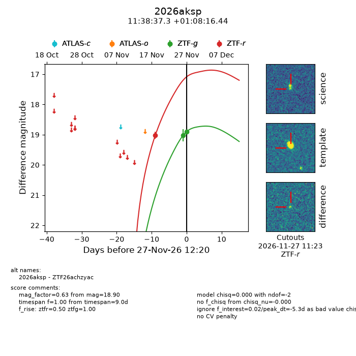
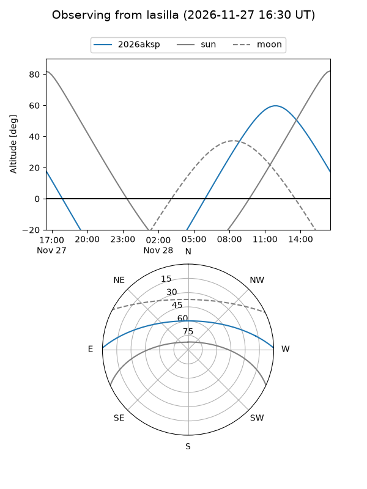
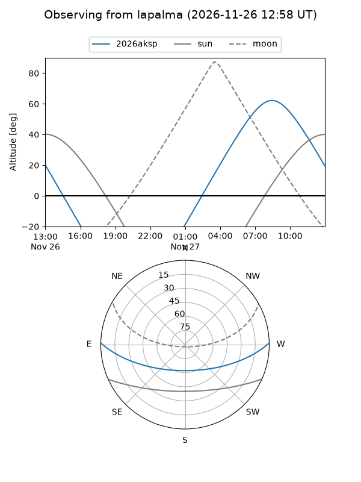
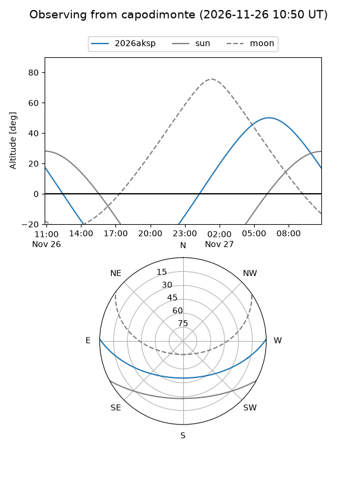
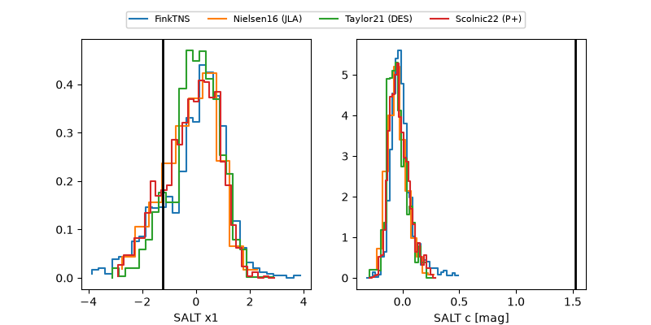

2026aksp
Target 2026aksp at 2026-11-27 12:21
Aliases and brokers:
FINK-ZTF: ztf.fink-portal.org/ZTF26achzyac
Lasair-ZTF: lasair-ztf.lsst.ac.uk/objects/ZTF26achzyac
ALeRCE-ZTF: alerce.online/object/ZTF26achzyac
YSE-PZ: ziggy.ucolick.org/yse/transient_detail/2026aksp
TNS name: wis-tns.org/object/2026aksp
Direct TNS query: direct search
alt names
ZTF26achzyac (ztf,fink_ztf)
2026aksp (tns,yse)
Coordinates:
equatorial (ra, dec) = 174.6554,+1.13790
equatorial (HMS+DMS) = 11:38:37.29,+01:08:16.44
galactic (l, b) = (265.9924,+58.68606)
Flags:
peak dt: -5.3
Photometry:
last ztfg=18.90, ztfr=19.03
2 ztfg, 1 ztfr detections
Lightcurve

Visibility



Additional plots
